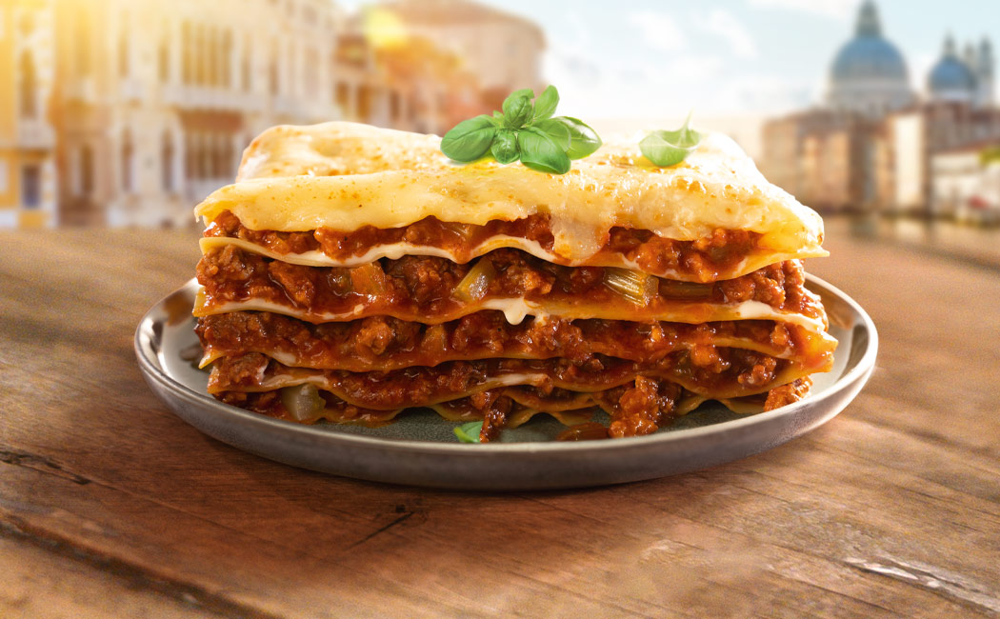

Lasagna

Description
This is a delicious recipe for a classic italian lasagne with beef.
Perfect for a family dinner or a cozy evening with friends.
Ingredients
- carrots
- onions
- beef
- Celery
- Tomato paste
- chopped tomatoes
- wine
- lasagna plates
- cheese
- milk
- flour
- butter
Steps
- chop and fry the carrots, Celery and onions first
- add garlic tomato paste to the ingredients
- add the beef
- deglaze with wine
- add choped tomatoes and spices
- let the butter melt in an seperate pot
- slowly add the flour to it
- when it thickend slowly pour the milk sip by sip into it
- spice it up with salt, pepper and Nutmeg
- put it all together layer by layer in a large mold.
Starting with the sauce, bechamel sauce, then the lasagne plates
- put it in the oven for 35 minutes at 180°C Circulation
- put cheese ontop of it and put it in the oven again for 10 minutes
go back